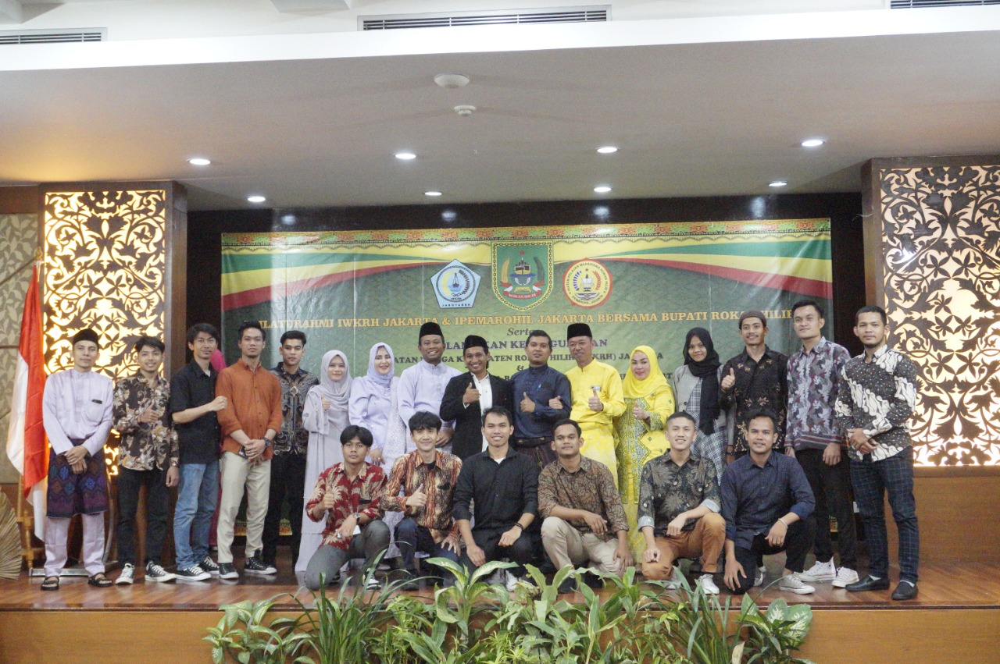

WELCOME TO THE OFFICIAL WEBSITE OF IPEMAROHIL JAKARTA
Ikatan pelajar mahasiswa rokan hilir jakarta periode 2022/2023
ipemarohil jakarta

untuk rokan hilir dan indonesia
VISI
Membentuk Mahasiswa Berfikir Sehat Serta Menjadi Pribadi yang Aktif, Kreatif, dan Produktif Dalam Jalannya Masing-Masing.
MISI
– Menjadi Wadah Aspirasi Mahasiswa dan Berusaha Mewujudkan Keinginan Mereka Dengan Cara Terbaik.
– Pendukung Utama Mahasiswa Untuk Mengikuti Kompetisi Regional, Nasional, Maupun Internasional.
– Turut Berpartisipasi Dalam Berbagai Event Didalam Maupun Diluar.
– Menyelenggarakan Berbagai Acara yang Mendukung Kreativitas dan Produktivitas Mahasiswa.
– Mengutamakan Kekeluargaan dan Silaturahmi.
WELCOME TO ABOUT US IPEMAROHIL JAKARTA
apa yang sedang terjadi di rokan hilir dan apa yang sedang orang bicarakan saat ini?
Berkat Rahmat Tuhan Yang Maha Esa, Pelajar dan Mahasiswa Rokan Hilir yang berada di JADETABEK,
menyadari sebagai generasi penerus yang mempunyai tanggung jawab terhadap perwujudan sebagai
negeri yang bermartabat, berdaulat, sejahtera, cerdas, dan mampu berperan dalam membangun masyarakat
Rokan Hilir, yang memiliki marwah, beradab, adil, dan makmur.
Bahwa sesungguhnya pelajar dan mahasiswa yang berdomisili di JADETABEK, merupakan suatu masyarakat yang hidup dalam suasana kekeluargaan,
untuk itu perlu dibina kesatuan dan persatuan yang harmonis. Selain itu pelajar dan mahasiswa Rokan Hilir yang berdomisili di JADETABEK
mempunyai hak dan kewajiban yang sama bahkan mempunyai beban moral tersendiri untuk berjuang dan mendarmabaktikan diri untuk
pencerahan daerah Rokan Hilir secara pribadi dan kolektif dengan mengedepankan kekuatan intelektual.
Meyakini bahwa tujuan itu dapat dicapai berkat usaha-usaha yang teratur, terencana, dan penuh kebijaksanaan yang
dapat dipertanggungjawabkan serta berkat Ridho Tuhan Yang Maha Esa, maka dengan ini pelajar dan mahasiswa Rokan Hilir
yang berdomisili di JADETABEK, mengikat diri dalam suatu wadah organisasi yang berpedoman kepada Anggaran Dasar dan Anggaran
Rumah Tangga.
IPEMAROHIL Jakarta adalah organisasi paguyuban pelajar dan mahasiswa yang sedang melaksanakan studi di Jadetabek.
IPEMAROHIL Jakarta berfungsi sebagai wadah atau penghimpun pelajar, mahasiswa Rokan Hilir yang melaksanakan studi di Jadetabek.
IPEMAROHIL Jakarta berperan sebagai kontrol sosial dan motor perubahan sosial (social control and agent of social change) kearah yang lebih baik.
Untuk mencapai tujuan IPEMAROHIL Jakarta berusaha :
1. Membina generasi muda dalam mengamalkan pancasila.
2. Mengembangkan potensi kerohanian, kreasi keilmuan, sosial, budaya, dan kewirausahaan.
3. Membina hubungan kekeluargaan yang harmonis sesama anggota dan masyarakat sosial .
4. Mengembangkan nilai-nilai seni dan budaya Melayu Rokan Hilir pada khususnya dan budaya Riau pada umumnya.
5. Mempelopori tradisi intelektual di kalangan anggota IPEMAROHIL Jakarta demi percepatan pembangunan daerah Rokan Hilir.
6. Berperan aktif dalam pembangunan daerah Rokan Hilir khususnya dan pembangunan Riau pada umumnya.
7. Usaha-usaha lain yang sesuai dengan tujuan dan tidak bertentangan dengan AD/ART.
Badan Pengurus Harian inti
Ikatan Pelajar Mahasiswa Rokan Hilir Jakarta Periode 2022/2023
-
Mhd. Zuhdi
Ketua Umum -
Muhammad Syarifudin
Sekretaris Jenderal -
Khoiriyah
Bendahara